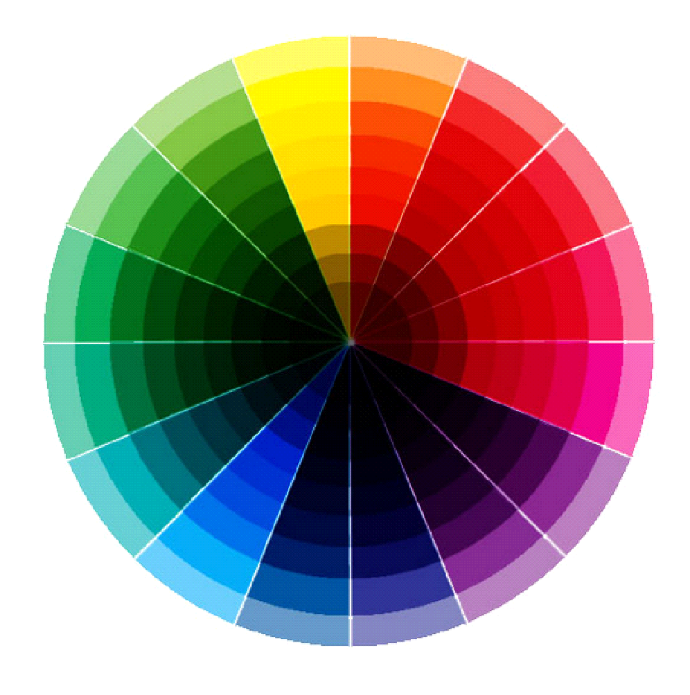
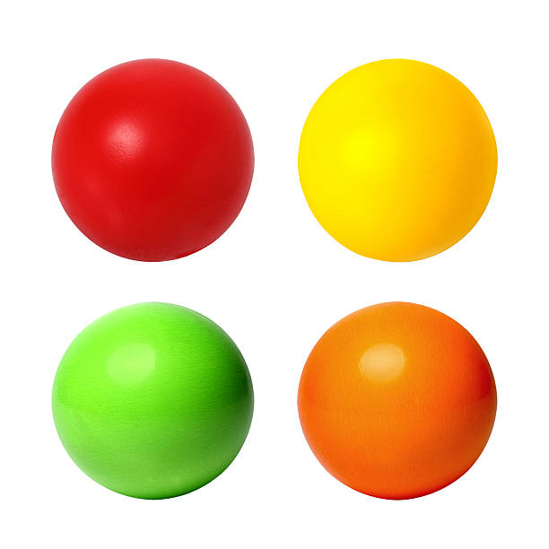

Trabajo 1 - Tablas
Aprendimos la colocacion de una web haciendo formas.
Ver proyecto completoTrabajo 2 - Bolitas
Aprendimos la colocacion de una web haciendo formas.
Ver proyecto completoTrabajo 3 - Mapa de Uso

Aprendimos ha selecionar una parte de una imagen y que fuera a informacion x.
Ver proyecto completoTrabajo 4 - Git

Pruebas
Ver proyecto completoTrabajo 5 - Anclas
Aprendimos el hacer anclas "Ancors"
Ver proyecto completoTrabajo 6 - Estilos

Aprendimos una parte de CSS.
Ver proyecto completoTrabajo 7 - Etiquetas texto

Aprendimos etiquetas de texto.
Ver proyecto completoTrabajo 8 - Primera web

La primera pagina web que hice.
Ver proyecto completoTrabajo 9 - Posiciones

Aprendimos las posiciones de una web.
Ver proyecto completoTrabajo 10 - DHCP

Detalles sobre el DHCP.
Ver proyecto completoTrabajo 11 - Inteligencias Artificiales

Tipos de Inteligencias Artificiales.
Ver proyecto completoTrabajo 12 - Formularios

Aprendimos a hacer formularios.
Ver proyecto completo